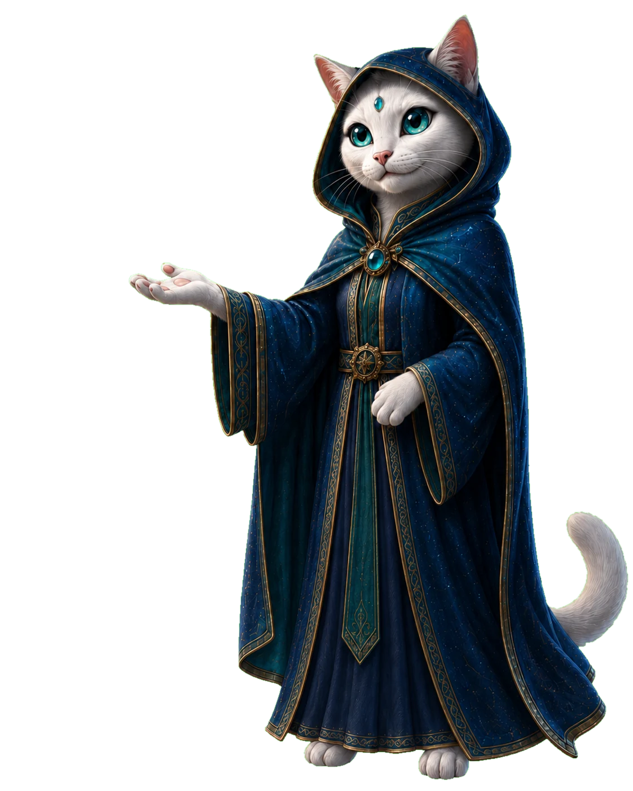
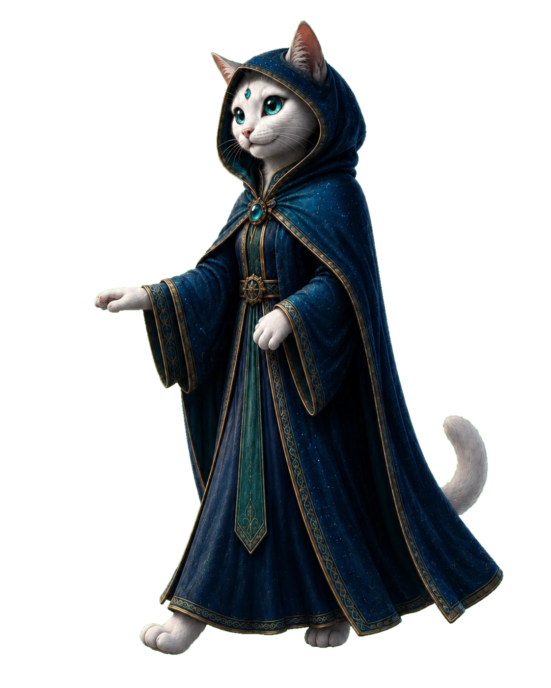
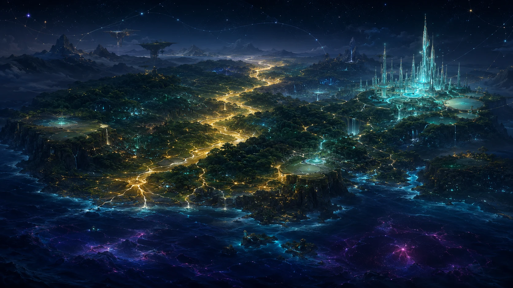

ロナは、GURiN Worldを歩く旅の案内役。
その名は、膨大なデータ量を表す言葉から。
01空間を自在に遊びながら、
今のあなたへ、ぴったりな観測のヒントを。
世界地図は、まだ育っている。光る珠に触れてみてください。

観測する。受け取る。読む。
今のあなたに合う入口から、どうぞ。
この世界は、
意識を通して映し出される、マボロシ世界。
見つめるたび、見え方が変わり、
ほどけるたび、新しい道が現れる。
GURiN Worldは、
その世界を歩き、創造していくための入口です。
ここから先、GURiN Worldは、
試す・記憶をひらく・深める、
3つのフィールドへ広がっていきます。
世界観と意識を、現実の中で実験していく場所。
月1〜2回のGURiNトークとQ&Aを通して、
それぞれのマボロシ世界に新しい視点を持ち帰り、
現実の中で実装していきます。
GURiN Worldに流れる、言葉と記憶を収める場所。
記事や辞書、宇宙のクラウド。
世界観の奥へつながる記憶を、ひらいていきます。
世界観を、学びと実践へつなげる場所。
宇宙のしくみ、未来のシナリオ、意識とテクノロジー、
インスピレーション、お金、仕事、人間関係、生老病死……
人類のあらゆる謎を、紐解いていきます。
35年前、未来意識®メッセージを受け取り、
マスコミ勤務時代から個人セッションをスタート。
意識が現実を映し出すしくみを、
言葉と実践を通して発信。
独立・起業後、講座・書籍・事業へと世界を広げる。
今、AIとともに、
その叡智を、彩り豊かなGURiN Worldとしてひらく。
マボロシストは、超リアリスト。
GURiNについて ↗